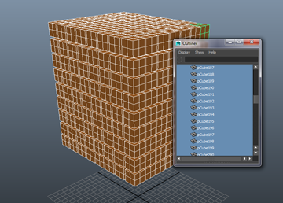
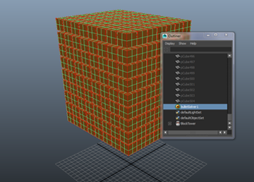
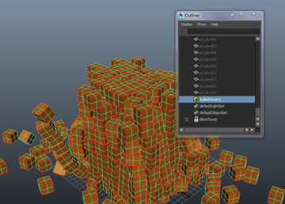

如果您处理需要与解算中许多对象相关的模拟（例如由几千块砖组成的一面墙），可能会显著影响模拟的性能。此外，在“大纲视图”(Outliner)中选择每个对象会非常繁琐。在这些情况下，最好创建刚体集，其中包含解算中包括的所有刚体对象。
注：
- 刚体集不支持复合和自动复合碰撞形状。
- 在创建 Bullet 刚体集之前冻结缩放。缩放变换值未正确传递到生成的已解算对象。
从多个对象创建刚体集：
- 打开“大纲视图”(Outliner)，按住 Shift 键并选择解算中要包含的所有对象或组。如果选择一个组，则将该组下找到的所有非中间网格形状添加为一个刚体。

- 转到“Bullet > 创建刚体集”(Bullet > Create Rigid Set) >
 。创建一个刚体集为所有选定的对象分组，这样您可以在“大纲视图”(Outliner)中快速选择它们。
注： 如果选择一个组节点，从 Bullet 菜单中运行“创建刚体集”(Create Rigid Set)，则可以使用组节点名称 +“Set”。如果一个节点已使用了该名称，Bullet 会尝试 {objectName} +“set”+ 1 等等，直到找到唯一名称。如果使用多选，未提供唯一名称则将失败。
。创建一个刚体集为所有选定的对象分组，这样您可以在“大纲视图”(Outliner)中快速选择它们。
注： 如果选择一个组节点，从 Bullet 菜单中运行“创建刚体集”(Create Rigid Set)，则可以使用组节点名称 +“Set”。如果一个节点已使用了该名称，Bullet 会尝试 {objectName} +“set”+ 1 等等，直到找到唯一名称。如果使用多选，未提供唯一名称则将失败。 - 为对象集合设置“名称”(Name)，然后选择“创建输入集”(Create Input Set)和/或“创建输出网格”(Create Output Mesh)，然后单击“应用并关闭”(Apply and Close)。有关这些设置的详细信息，请参见“刚体集”(Rigid Sets)菜单。
- 在“大纲视图”(Outliner)中选择解算器，然后在“属性编辑器”(Attribute Editor)的“解算器显示”(Solver Display)选项中启用
“边界框”(Bounding Box)
以查看碰撞边界。

- 启用 地平面(Ground Plane) ，以便对象将与曲面发生碰撞。
- 输出网格用于实现模拟可视化。
- 按“播放”(Play)观看模拟。

您还可以使用 Alembic 缓存导出网格形状，可以将 50 000 对象的场景缩减到一个较大的网格中，但是您需要手动重新连接材质和着色器。有关详细信息，请参见使用 Alembic 渲染 Bullet 模拟。
您可以在“属性编辑器”(Attribute Editor)中编辑刚体集的 Bullet Physics 属性，方法是找到关联“初始状态”(Initial State)节点，该节点位于“大纲视图”(Outliner)的“Bullet 解算器形状”(Bullet Solver Shape)节点下。